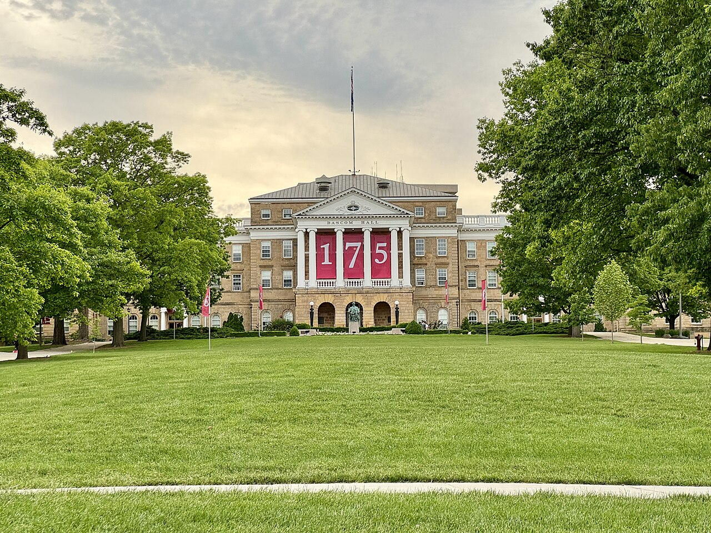

以证据和评测驱动AI 工程 AI engineering grounded in evidence
我在 UW–Madison 外科系负责一项获资助的甲状腺癌 AI 研究项目，也曾在微软 Cloud & AI、蓝船科技和江苏力群科技实习。工作重心是可靠的智能体、可溯源 RAG 和可重复的评测。 I lead engineering on a funded thyroid cancer AI research project at UW–Madison Surgery, following internships at Microsoft Cloud & AI, Lanchuan Technology, and Jiangsu Liqun. My focus is reliable agents, traceable RAG, and repeatable evaluation.
$69K临床 AI 研究资助Clinical AI research funding
3段技术实习Technical internships
3.7GPA / 4.0 · Computer Science
2个独立 AI 系统Independent AI systems
研究与实习Research & Experience
从临床需求到可靠系统From clinical needs to reliable systems
当前研究Current research
甲状腺癌 AI 研究 · 技术负责人Lead AI Engineer · Thyroid Cancer AI Research
UW–Madison Department of Surgery · $69K 资助项目funded project
- 与 Courtney Balentine, MD, MPH 和 Alan McMillan, PhD 两位 PI 及临床合作方协作，将需求转化为面向落地的 LLM 系统架构。Work with faculty PIs Courtney Balentine, MD, MPH and Alan McMillan, PhD, plus clinical stakeholders to translate requirements into a production-oriented LLM architecture.
- 负责临床文档预处理、检索、提示词编排、基于证据的回答生成与评测组成的完整 RAG 链路。Own the RAG pipeline from clinical document preprocessing and retrieval to prompt orchestration, grounded generation, and evaluation.
- 建立幻觉风险、来源可追溯性、回答质量及临床敏感失败场景的安全评测流程；系统尚在研发中，为未来患者端验证做准备。Develop safety evaluations for hallucination, source traceability, response quality, and clinically sensitive failures. The system is in development ahead of future patient-facing validation.
2026.07 — 2026.09
微软 · 云计算与人工智能事业部Microsoft · Cloud & AI
AI 应用开发工程师（实习）AI Application Engineer Intern
- 为 Phi-3 构建 24 个 Azure REST 工具、320 条双语指令和六维工具调用评测；完整调用准确率从 61% 提升至 87%，平均推理延迟降低 28%。Built a Phi-3 tool-calling evaluation with 24 Azure REST tools and 320 bilingual instructions; complete-call accuracy rose from 61% to 87%, with 28% lower average inference latency.
- 基于 Semantic Kernel + Phi-3 构建 Azure 文档 ReAct 智能体，120 题评测中答案准确率 85%、有效引用率 92%。Built a Semantic Kernel + Phi-3 Azure documentation ReAct agent: 85% answer accuracy and 92% valid citations across 120 evaluation questions.
- 用 AutoGen 开发架构规划与审查多智能体流程，并实现 FastAPI 事件响应智能体；配套状态校验、故障恢复及 329 项 Python / 5 项 Node.js 测试。Developed AutoGen architecture planning and review, plus a FastAPI incident-response agent, with state validation, recovery paths, and 329 Python / 5 Node.js tests.
2025.09 — 2025.12
江苏力群科技 · 数据中台Jiangsu Liqun Technology · Data Platform
数据中台开发实习生Data Platform Developer Intern
- 用 Flink + Kafka 构建 Exactly-Once 实时 ETL，接入 8 个数据源，日处理 500 万+ 条记录，端到端延迟低于 5 秒。Built Exactly-Once Flink + Kafka ETL across eight sources, processing 5M+ records per day with under-five-second end-to-end latency.
- 面向 200+ 张表开发 Schema-aware Text-to-SQL；在 300 条评测问题上，SQL 执行准确率从 62% 提升至 85%，系统覆盖 6 个业务部门。Developed schema-aware Text-to-SQL across 200+ tables; SQL execution accuracy rose from 62% to 85% on 300 evaluation questions, with adoption across six departments.
2025.05 — 2025.09
蓝船科技有限公司 · AI 研发部Lanchuan Technology · AI R&D
AI 应用与工作流开发工程师（实习）AI Application & Workflow Engineer (Intern)
- 上线 12 条 n8n / Coze 工作流，日处理 2,000+ 条数据；字段抽取准确率达 95.5%，单条处理时间由约 15 分钟缩短至 2.5 分钟以内。Shipped 12 n8n / Coze workflows processing 2,000+ records daily; field extraction reached 95.5% accuracy, and per-record processing fell from about 15 minutes to under 2.5 minutes.
- 通过 Webhook / REST 接入 Slack 与 Notion，链路成功率从 92% 提升至 99.5%；沉淀 20+ 个可复用流程节点。Integrated Slack and Notion through Webhooks / REST, improving workflow success from 92% to 99.5%, and packaged 20+ reusable nodes.
教育背景Education
计算机科学 · UW–MadisonComputer Science · UW–Madison
UW–Madison
2023.09 — 2027.05
威斯康星大学麦迪逊分校 (UW–Madison)University of Wisconsin–Madison
计算机科学 本科 · GPA 3.7/4.0 · Dean's List 校长荣誉学生B.S. Computer Science · GPA 3.7/4.0 · Dean's List
- 聚焦 LLM 应用、Agent 系统、RAG 与数据基础设施。Focused on LLM applications, agent systems, RAG, and data infrastructure.
- 相关课程：数据结构与算法、数据库系统、操作系统、计算机网络、离散数学。Coursework: Data Structures & Algorithms, Database Systems, Operating Systems, Computer Networks, Discrete Math.

校园照片：Campus photos: Bascom Hall © Rosina Peixoto · Bascom Mall © Warren LeMay （CC BY-SA，经 Wikimedia Commons）。(CC BY-SA, via Wikimedia Commons).
专业技能Skills
我的工具箱My toolbox
编程语言Languages
AI / Agent
检索 / 数据Retrieval / Data
后端 / 基础设施Backend / Infra
荣誉 / 在校Honors & Campus
课堂之外Beyond the classroom
2023 — 2025
Dean's List · 校长荣誉学生名单· Honor Roll
GPA 3.7 / 4.0 · Computer Science
2025.01 — 至今Present
Union South 运营助理Operations Assistant · Union South
高并发服务场景High-traffic service operations
- 高峰期日均处理 300+ 单点单、结算及异常协调。Handled 300+ daily orders, payments, and exception coordination at peak demand.
想了解更多？Want to know more?
看看我的项目，或直接和我聊聊。Take a look at my projects, or just reach out.
查看项目View Projects↗